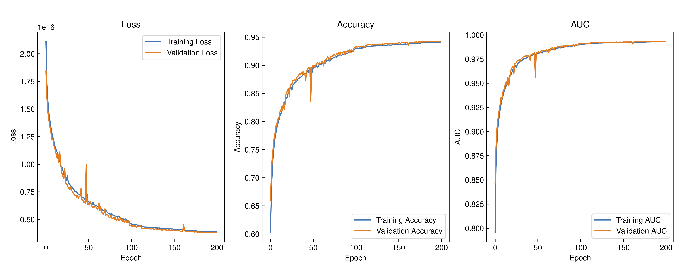

Training
The FST’s training procedure is a structured process focused on optimizing the configured Transformer model’s ability to accurately predict outcomes based on the prepared input data. This procedure is adapted based on whether the task is classification or regression.
General Process
Training proceeds in epochs, where the entire dataset is passed through the model multiple times. During each epoch, the data is processed in batches, with the model making predictions for each batch and calculating the associated loss. Backpropagation is then used to compute the gradients of the loss function with respect to the model’s parameters. These gradients are passed to the Adam optimizer, which updates the model’s parameters accordingly. This iterative process allows the model to progressively improve its performance.
To ensure robust performance and to prevent overfitting, the training process often includes regular evaluations on a validation set. This helps monitor the model’s ability to generalize to unseen data. Additionally, checkpointing is implemented to save the model’s state at various points during training, allowing for recovery if the process is interrupted. Early stopping can also be employed, halting the training if the model’s performance on the validation set stops improving, thus avoiding unnecessary computations and potential overfitting.
Classification and Regression Metrics
In the current implementation, the Categorical Cross-Entropy Loss function is used as the primary metric for evaluating the classification model’s predictions. This loss function is well-suited for tasks where the model outputs a probability distribution over different classes. It measures the performance of the classification model by quantifying the difference between the predicted probability distribution and the true distribution. Alongside the primary loss function, secondary metrics such as accuracy and AUC (Area Under the Curve). The accuracy measures the proportion of correctly predicted instances among the total instances, while the AUC metric evaluates the model’s ability to distinguish between classes and is especially useful for understanding the performance across different threshold levels. AUC refers to the area under the ROC (Receiver Operating Characteristic) curve. The ROC curve plots the true positive rate against the false positive rate at various threshold settings.
In case of regression tasks, the Mean Squared (MSE) Error is used as loss function. This is suitable for the models that predict continuous values. It measures the average squared difference between the predicted and actual values, providing a metric for how well the model’s predictions match the true values. Alongside the primary loss function, secondary metrics such as accuracy and AUC (Area Under the Curve).
Both classification or regression metrics are monitored and managed during the model training using specific Tensorflow callbacks. These callbacks provide functionality for early stopping, model checkpointing, and logging metrics for visualization. The Fig. 4 gives an illustration of loss, accuracy and AUC curves for training and validation of classification models, which are updated after each epoch during the training.
Example of usual training curves for monitoring classification tasks:

Optimizer
To optimize the model’s parameters, the Adam optimizer is employed. Adam is a popular choice in deep learning due to its adaptive learning rate, which adjusts the learning rate for each parameter individually based on estimates of first and second moments of the gradients. This results in more efficient and faster convergence, especially in complex models like transformers. The Adam optimizer updates the model’s weights based on the gradients computed from the loss, gradually refining the model’s predictions over successive iterations.